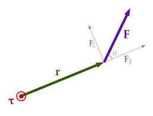
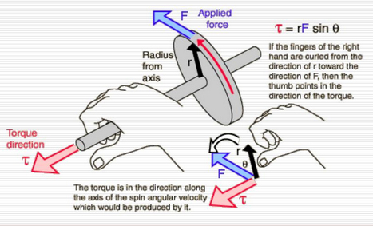
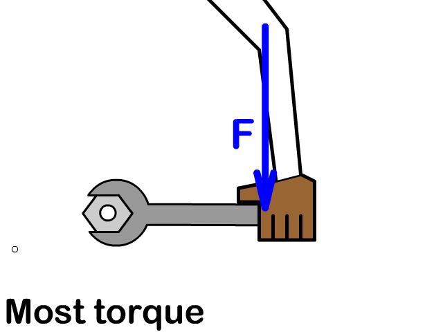
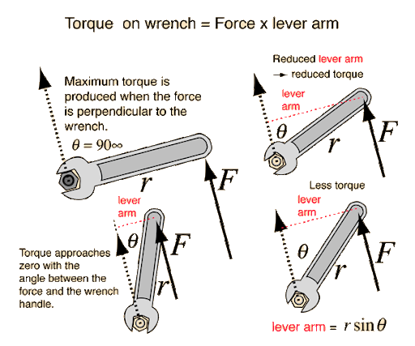

Torque is the rotational equivalent of force. It describes how a force causes an object to rotate about a specific axis or pivot point. The effectiveness of a force in producing rotation depends on the force's magnitude, direction, and where it is applied relative to the axis.

$\tau = r F \sin \theta$
Where:
$\tau$ is torque (in N·m)
$r$ is the distance from the axis of rotation to the point where the force is applied
$F$ is the magnitude of the force
$\theta$ is the angle between the position vector and the force vector
Cross Product Form
Torque is more formally defined as the cross product of the position vector $\vec{r}$ and the force vector $\vec{F}$:
$\vec{\tau} = \vec{r} \times \vec{F}$
The magnitude of the torque is:
$|\vec{\tau}| = r F \sin \theta$
The direction of $\vec{\tau}$ is perpendicular to the plane formed by $\vec{r}$ and $\vec{F}$, determined using the right-hand rule.

Lever Arm Form
The lever arm is the perpendicular distance from the axis of rotation to the line of action of the force. Torque can also be calculated using:
$\tau = r_{\perp} \cdot F$
This form is especially useful when the perpendicular distance is known or easier to find than the angle.


Example 1: Force Perpendicular to Lever Arm
A force of 12 N is applied perpendicular to a wrench that is 0.25 m long. What is the torque produced?